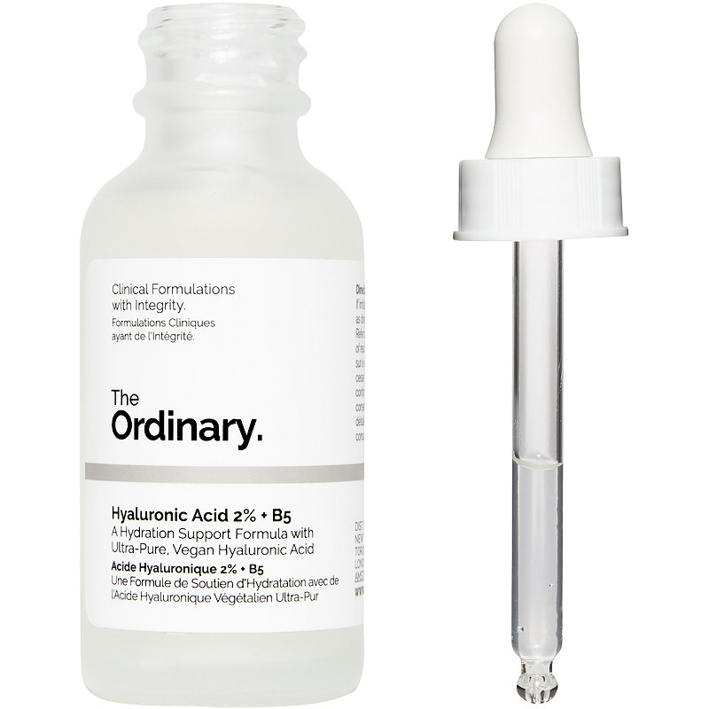

Hyaluronic Acid 2% + B5
The molecular size of HA determines its depth of delivery in the skin. This formulation combines low-, medium- and high-molecular weight HA, as well as a next-generation HA crosspolymer at a combined concentration of 2% for multi-depth hydration in a water-based formula. This system is supported with the addition of Vitamin B5 which also enhances surface hydration. Offering the heroic hydrating properties of hyaluronic acid – with an extraordinarily low price tag – this oil-free treatment penetrates deep into skin’s layers to deliver intense, long-lasting moisture that swiftly smooths and perfectly plumps. Enhanced with a boost of vitamin B5 to increase efficacy, this lightweight serum will leave skin softened and strengthened.
Featuring three types of hyaluronic acid (at low, medium and high molecular weights) this lightweight serum offers serious skin smoothing – at a surprisingly small price.
Penetrating the skin to reach its deeper layers, The Ordinary’s Hyaluronic Acid 2% + B5 delivers lasting hydration and offers visible plumping and moisture retention so that skin looks smoother, softer and healthier. The hyaluronic acid at the centre of this super serum attracts up to 1000 times its weight in water, while a brilliant boost of vitamin B5 heals dry and damaged areas by stabilising the skin’s barrier function and promoting the growth of stronger tissue. After taking the beautysphere by storm (read: intense hurricane), The Ordinary even released a {bigger size} – so you can spend even longer with your beloved skin-boosting formula between empties.
ONLY IDR 300K, make it yours! ♡
Hyaluronic Acid 2% + B5
